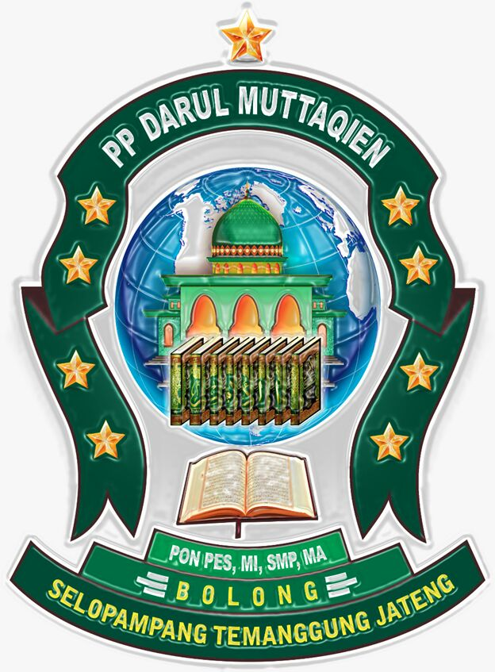

Assalamu'alaikum.Wr.Wb
DARUL MUTTAQIEN Islamic College

- VISI dan MISI DARUL MUTTAQIEN
- PONDOK PESANTREN DARUL MUTTAQIEN (PP-DM)
- SEKOLAH MENENGAH PERTAMA DARUL MUTTAQIEN (SMP-DM)
- MADRASAH ALIYAH DARUL MUTTAQIEN (MA-DM)
PROFIL PESANTREN
Darul Muttaqien Merupakan lembaga untuk memperdalam ilmu Formal maupun Nonformal, yang diharapkan nantinya menjadi bekal bagi santri dalam menghadapi kehidupan di dunia maupun di akhirat.
VISI dan MISI DARUL MUTTAQIEN
Pondok Pesantren Darul Muttaqien dari tahun ke tahun mengalami perkembangan yang cukup pesat. Visi dari pesantren sendiri adalah unggul dalam mutu dan memiliki keteguhan iman serta akhlaqul karimah. Adapun Misinya adalah :
- Mampu menguasai tekhnologi sebagai bagian dari perkembangan global.
- Mempertahankan nilai-nilai luhur pesantren dalam rangka meneguhkan iman dan akhlaqul karimah serta menanamkan nilai-nilai kebangsaan dalam kehidupan berbangsa dan bernegara.
PONDOK PESANTREN DARUL MUTTAQIEN (PP-DM)
Pondok pesantren Darul Muttaqien adalah salah satu pesantren salaf tua yang berada di wilayah kabupaten Temanggung, yang didirikan oleh kyai ternama yaitu K.H. Cholil Asy'ari pada tahun 1965, yang berlokasi di dusun Bolong desa Ngaditirto kecamatan Selopampang kabupaten Temanggung provinsi Jawa Tengah.Meskipun berlokasi di pegunungan dan berjarak 10 km dari pusat kabupaten, Darul Muttaqien memiliki cukup banyak santri yang berpotensi tinggi. Saat ini jumlah santri mencapai 750 yang terdiri dari santri putra dan santri putri dengan 30 ustadz dan ustadzah. Santri di pesantren tersebut berasal dari berbagai daerah seperti Temanggung, Magelang, Kendal, Semarang, Yogyakarta dan ada beberapa yang berasal dari luar jawa seperti Jambi, Palembang, Riau, dan Kalimantan.
SEKOLAH MENENGAH PERTAMA (SMP-DM)
SMP Darul Muttaqien berdiri pada tahun 2007 di bawah naungan Dinas Pendidikan yang dikelola oleh K.H.M. Abdul Khalim S.Pdi., putra ke-4 dari K.H. Cholil Asy'ari. Saat ini siswa SMP berjumlah 450 yang terdiri dari 12 kelas. SMP Darul Muttaqien mengalami perkembangan yang cukup pesat. Hal ini dibuktikan dengan berbagai kejuaraan yang telah diraih, seperti :
- Juara 1 Olimpiade Matematika Kabupaten.
- Juara 1 Olimpiade Fisika Kabupaten.
- Juara 2 Olimpiade ke-NU-an provinsi.
- Juara 3 pidato Bahasa Indonesia.
- Juara 3 lomba Volly.
- Juara PMI Nasioanal.
- dan masih banyak lainnya
SMP Darul Muttaqien juga mengadakan banyak ekstra, seperti :
- Pramuka.
- PMI.
- Perakitan Robot Hexsapod.
- dan juga pembuatan Blog.
MADRASAH ALIYAH DARUL MUTTAQIEN (MA-DM)
MA Darul Muttaqien berdiri pada tahun 2010 di bawah naungan Kementrian Agama yang dikelola oleh K.M. Abdul Karim L.C., putra bungsu dari K.H. Cholil Asy,ari. Dalam kurun waktu 7 tahun, MA Darul Muttaqien mengalami perkembangan yang cukup besar. Saat ini jumlah siswa mencapai 250 yang terdiri dari 11 kelas dengan 2 penjurusan yaitu kelas IPA dan kelas IPS. Dalam kegiatan ekstra juga mengalami perkembangan yang sangat pesat. Dibuktikan dengan selalu membawa pulamg piala kejuaraan setiap mengikuti berbagai perlomban. Adapun cabang lomba yang diikuti antara lain :
- Olimpiade.
- Reportase.
- Pidato.
- Debat
- Film.
- Puisi.
- Olagraga.
- dan Karya Ilmiah.
Hal yang paling membanggakan bahwa Darul Muttaqien pernah meraih juara 1 tingkat Nasional dalam lomba film pendek.
PENUTUP
Pondok Pesantren Darul Muttaqien terus melakukan perubahan, berkreasi, dan berinovasi agar para santri dapat mengikuti perkembangan dunia dan tekhnologi saat ini. Hal ini dimaksudkan agar para santri nantinya bisa berkembang dan berkreasi dalam kehidupan bermasyarakat, tetapi tidak meninggalkan ciri khas dari pondok pesantren, dan tetap mempertahankan norma-norma yang berlaku.